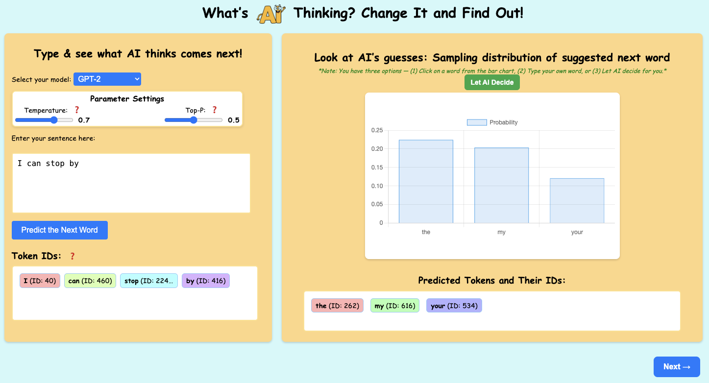

Think Like AI
"Think Like AI" is an interactive tool designed to help students understand Large Language Models. Below are the specific versions developed for my research.

Fall 2025 – Present
This version makes LLM probabilistic text generation visible
through dual visualizations (bar charts and pie charts) showing
how sampling parameters (temperature and top-p) affect probability
distributions. Goes beyond 7th grade probability concepts and
Texas TEKS standards by introducing students to transformations on
probability distributions.

Summer 2025
This version builds on the Spring 2025 design by adding
visualizations of attention weights and word embeddings. Students
can explore how language models "pay attention" to specific words
in a prompt through two-dimensional attention weight displays. The
word embedding visualization shows how words are represented
numerically in the model.

Spring 2025
This version features two interactive modules: Next-Word
Generation and Prompt Construction. Students can adjust sampling
parameters (temperature and top-p) and observe their effects in
real-time. Designed for middle school students (grades 6-8), this
version was piloted with 35 students in after-school sessions.